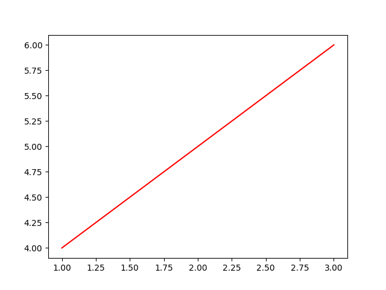
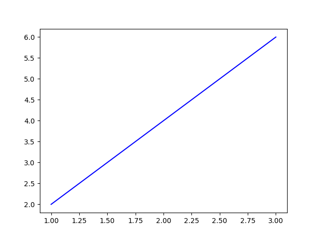
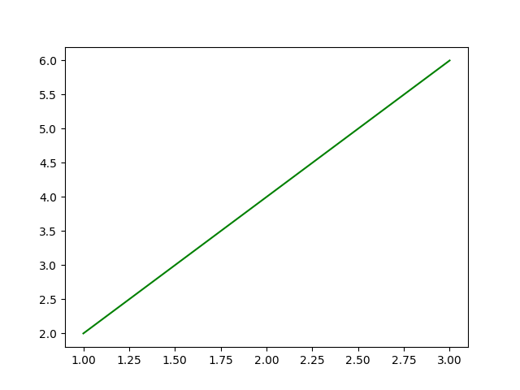
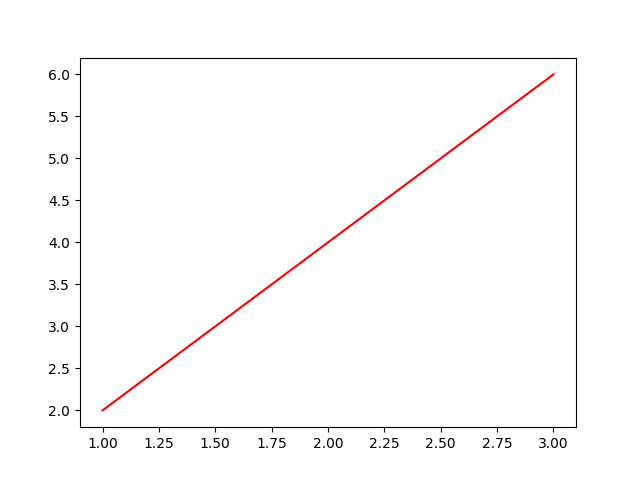

Note
Click here to download the full example code
Make a plot, save, and show it (with and without blocking)¶
Regular plot show and save
Same but interactive and iterative (plt.ion() -> child threads, multi figs)
- Use Bokeh to do some magic in a browser and draw connection to REST endpoint
for dashboard. Basically mention how we’ll likely use bokeh for graphs.
First let’s import our basic libraries
import numpy as np
import matplotlib.pyplot as plt
import imagepypelines as ip
We’ll also need to set up a few blocks
# A quick function which plots a line and styles it using plt.plot()'s kwargs
@ip.blockify(batch_type="all", void=True) # plot=True -> sets batch type to "all" for similar UX? Not sure if worth aliasing
def line_plot(x, y, color="r"):
fig = plt.figure()
plt.plot(x, y, color=color)
plt.show()
line_plot_red = line_plot.tweak(color='r')
line_plot_green = line_plot.tweak(color='g')
line_plot_blue = line_plot.tweak(color='b')
tasks_verbose = {"x": ip.Input(),
"y": ip.Input(),
"red": (line_plot_red, "x", "y"),
"green": (line_plot_green, "x", "y"),
"blue": (line_plot_blue, "x", "y")
}
tasks_tweaked = {"x": ip.Input(),
"y": ip.Input(),
"red": (line_plot.tweak(color='r'), "x", "y"),
"green": (line_plot.tweak(color='g'), "x", "y"),
"blue": (line_plot.tweak(color='b'), "x", "y")
}
# Normal functionality
line_plot([1,2,3], [4,5,6])
# Pipeline functionality - pre-defining separate instances
plotting = ip.Pipeline(tasks_verbose)
plotting([1,2,3],[2,4,6])
# Pipeline functionality - defining in place
plotting = ip.Pipeline(tasks_tweaked)
plotting([1,2,3],[2,4,6])
- 
- 
- 
- 
Out:
{'x': [1, 2, 3], 'y': [2, 4, 6], 'red': None, 'green': None, 'blue': None}
Total running time of the script: ( 0 minutes 0.635 seconds)